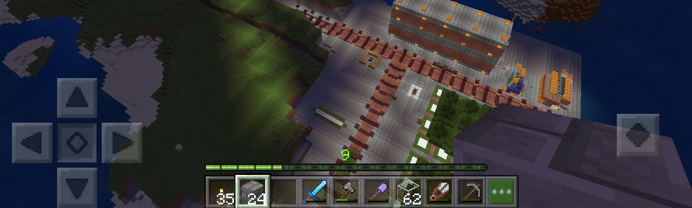
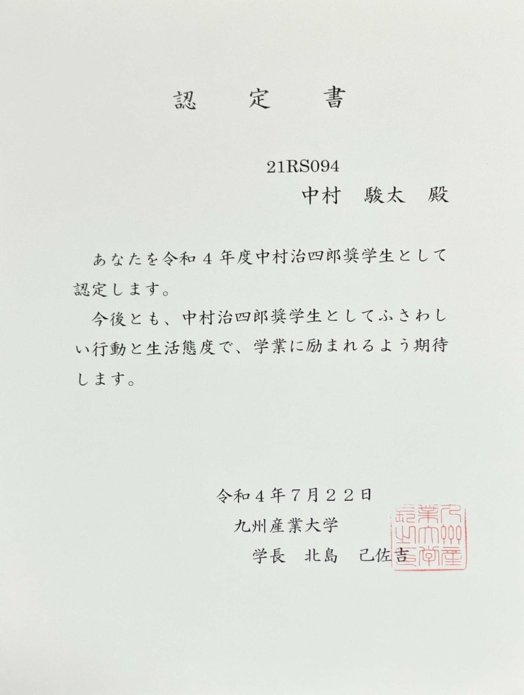
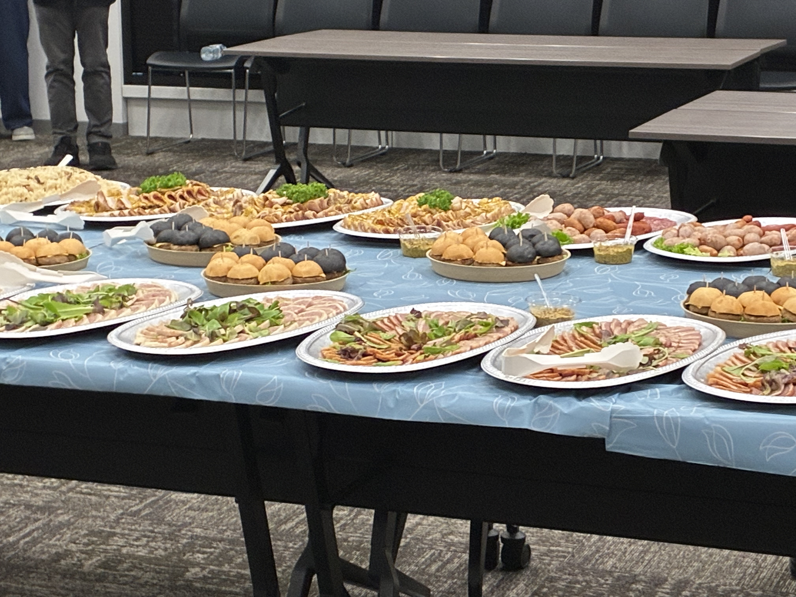
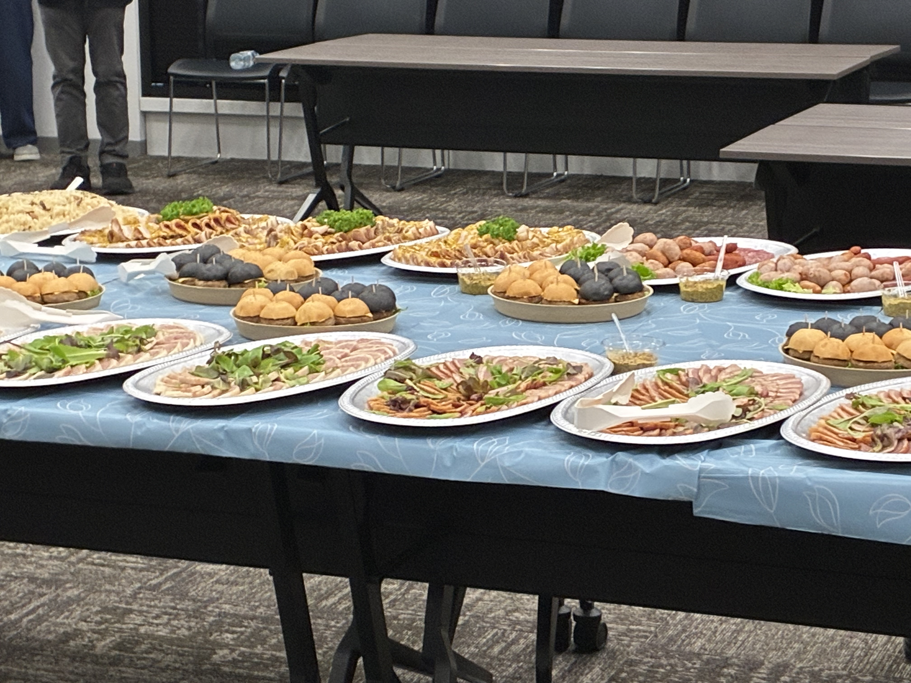

Shunta's Home Page
自己紹介
競プロを嗜んでいる Shunta と言います！数学や読書が好きです。
何やってる人？
九州産業大学大学院情報科学研究科にて情報科学を専攻しています。大学 2 年の頃、競技プログラミングに本格的に取り組んだことがきっかけでアルゴリズムに強い興味を持つようになり、大学院ではグラフ理論の問題に対する近似アルゴリズムの研究をしています。
私がエンジニアを志す理由
私がエンジニアになりたいのは、自信を持つ人々を増やすためです。趣味では競技プログラミングを、大学や大学院の研究ではアルゴリズムの高速化を扱っていて処理の高速化に強い関心があります。処理が高速化されるとユーザー自身が本当にしたいことに使える時間が増え、それに応じて行動する時間も増えます。行動すればするほど、数多くの結果が得られるのでその過程で自信がつくと考えています。処理の高速化に限らず、これまで世の中になかったソフトウェアが登場することでユーザーの手段が増え、その結果、自信がつくと考えています。私が過去に不登校を経験していたり、聴覚障害を抱えていることからこのような貢献には非常にやりがいを感じます。そのため、エンジニアという職業を通じて、究極的には、自信を持つ人々を増やしていきたいです！
よく使う言語・ツール
- Python
- Docker
- LaTeX
- Notion
- GitHub
- Visual Studio Code
勉強中の言語・ツール
- Ruby
- Ruby on Rails
- TypeScript
- JavaScript
- Rust
- SQL
これから勉強したい言語・ツール
- React
- Next.js
- Go
- Swift
- Elixir
保有資格
2016 年
2021 年
2022 年
- 2022/03/21 データサイエンス数学ストラテジスト（上級）
- 2022/04/21 実用数学技能検定準 1 級
- 2022/06/27 基本情報技術者試験
- 2022/11/05 G 検定
- 2022/12/16 Python3 エンジニア認定基礎試験
2023 年
- 2023/11/15 IT パスポート試験
- 2023/12/19 Python3 エンジニア認定データ分析試験
- 2023/12/21 応用情報技術者試験
2024 年
- 2024/11/15 情報セキュリティマネジメント試験
発表・成果物
2022 年
- 2022/07/16 KSU-COIL 型教育の一環として、AI を用いた成果物を海外大学へ発表しました（発表の詳細）。
- 2022/07/22 令和 4 年度中村治四郎奨学生に認定されました。

- 2022/12/19 記事『Notionのおすすめ書籍とラーメン』を書きました。
2023 年
2024 年
2025 年
自作ライブラリ
競プロ用の自作ライブラリを作っています。
自作ライブラリを整備するのは楽しいですよ！よかったら皆さんも作ってみてください。
私の自作ライブラリは こちら から見れます。
これからしたいことある？
2025 年は次のことを頑張りたいです！
- 大学外での研究発表（学会、シンポジウムなど） ← 達成！
- TypeScript を学ぶ ← 達成！
- 個人開発をする ← 達成！
- 競プロで水色コーダーになる
 
